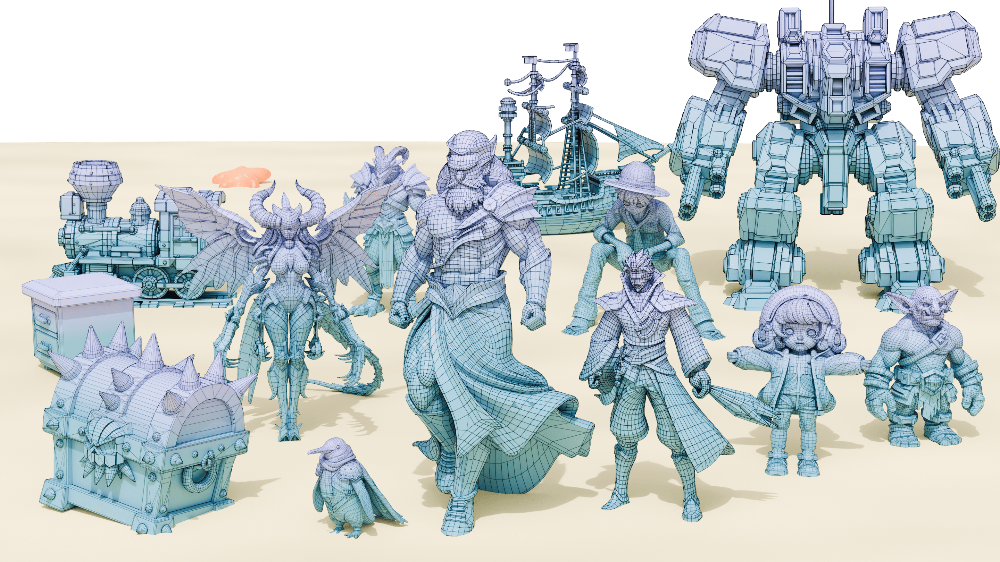
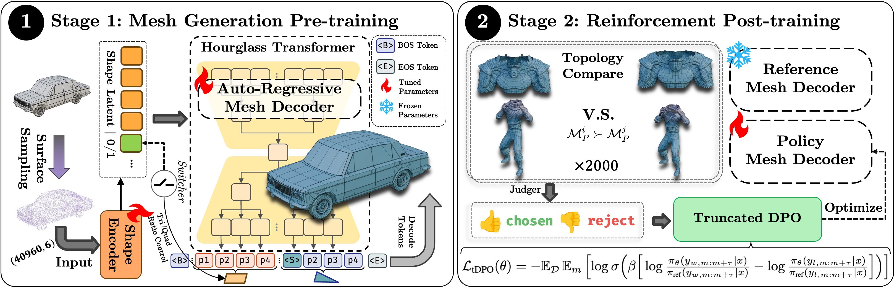
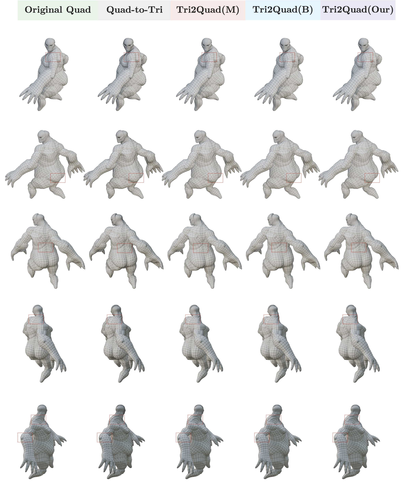
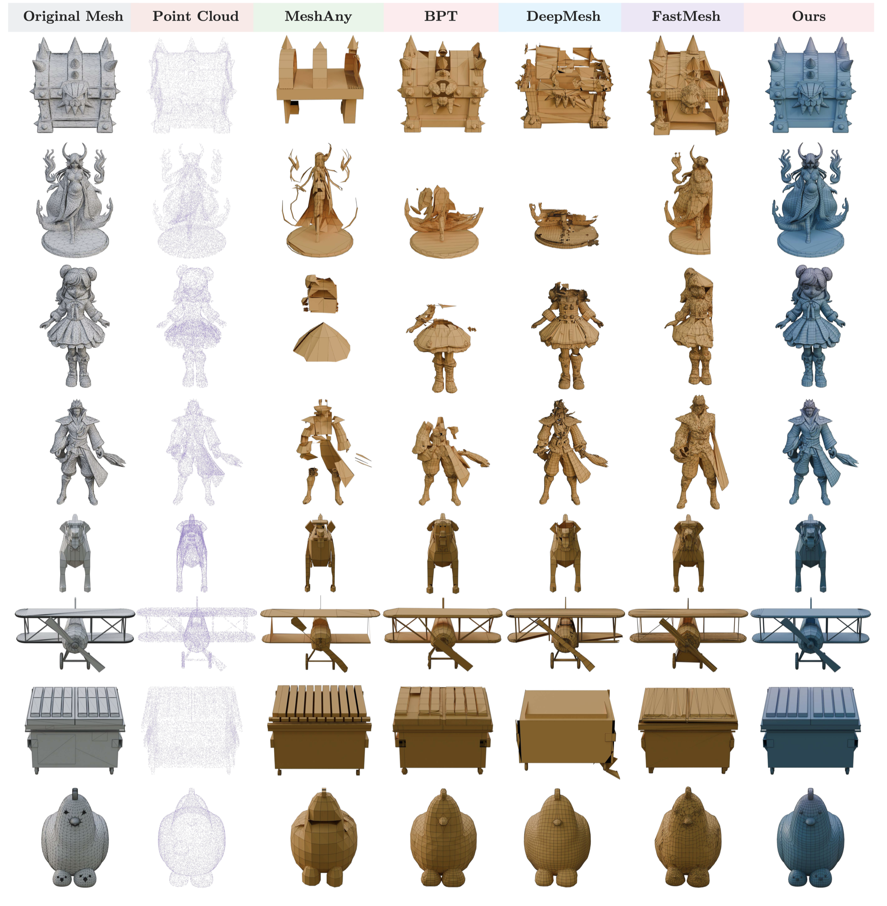
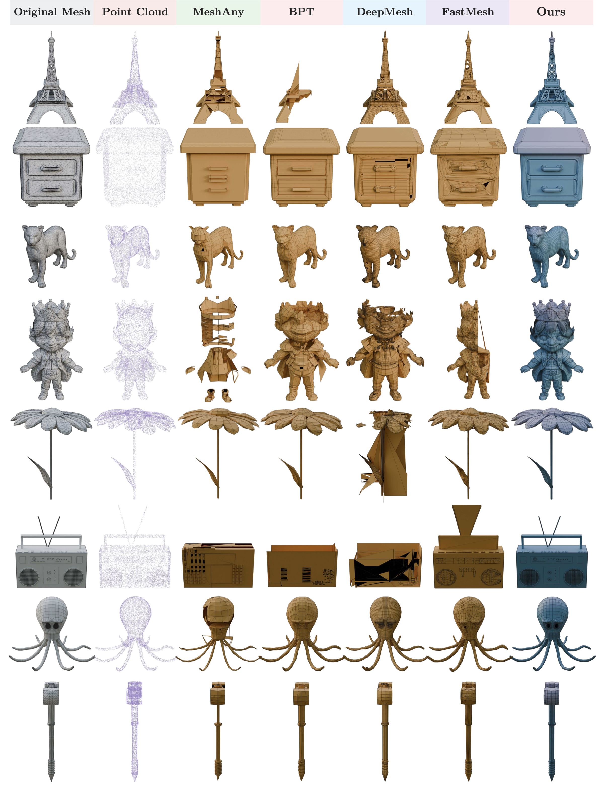
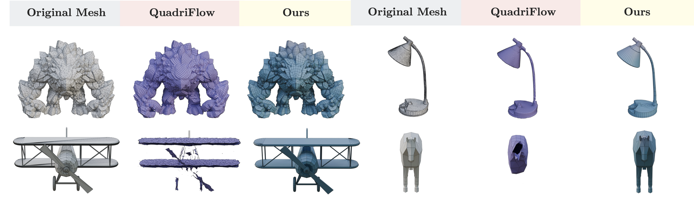
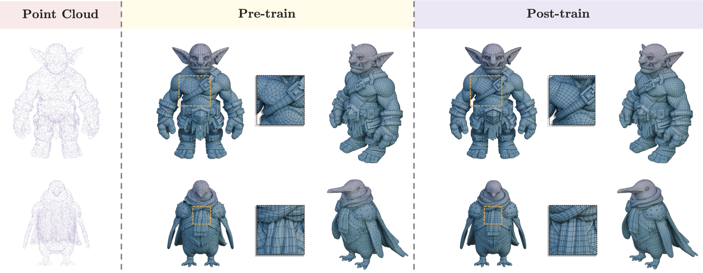
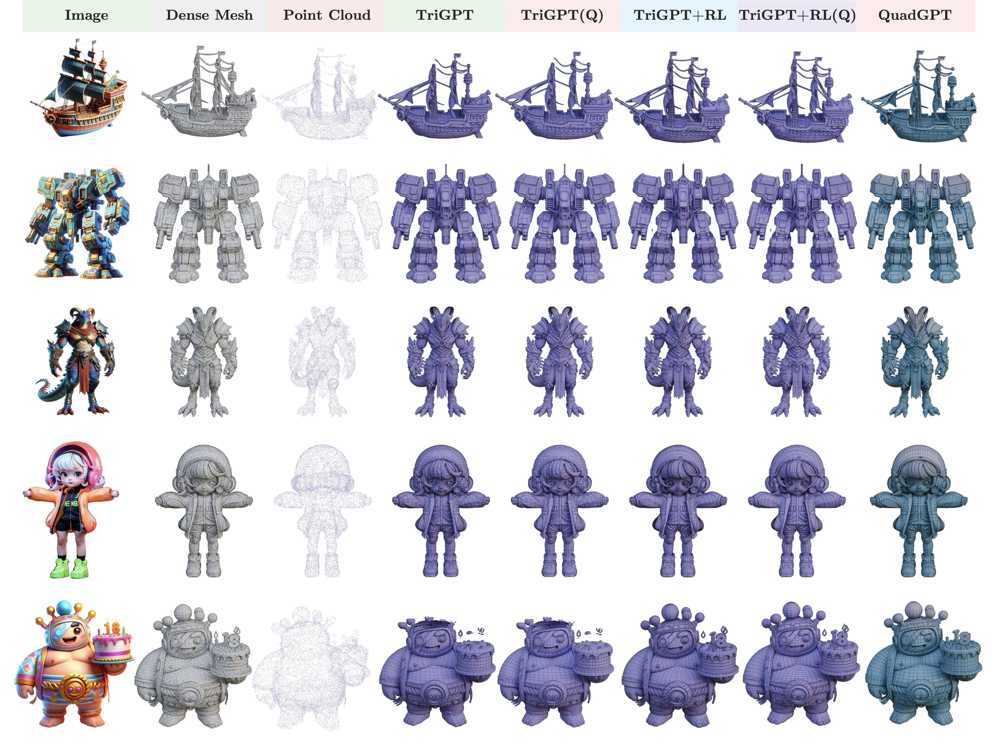

The generation of quadrilateral-dominant meshes is a cornerstone of professional 3D content creation.
However, existing generative models generate quad meshes by first generating triangle meshes and then merging triangles into quadrilaterals with specific rules, which typically produces quad meshes with poor topology.
In this paper, we introduce QuadGPT, the first autoregressive framework for generating quadrilateral meshes in an end-to-end manner.
QuadGPT formulates this as a sequence prediction paradigm, distinguished by two key innovations: a unified tokenization method to handle mixed topologies of triangles and quadrilaterals, and a specialized Reinforcement Learning fine-tuning method tDPO for better generation quality.
Extensive experiments demonstrate that QuadGPT significantly surpasses previous triangle-to-quad conversion pipelines in both geometric accuracy and topological quality.
Our work establishes a new benchmark for native quad-mesh generation and showcases the power of combining large-scale autoregressive models with topology-aware RL refinement for creating structured 3D assets.

QuadGPT generates native quadrilateral meshes with clean, artist-friendly edge flow directly from point clouds — no post-processing conversion needed.
- 🔷 First end-to-end autoregressive model that generates native quad-dominant meshes directly, without any post-processing conversion.
- 🔷 Unified sequence representation for mixed-element meshes with a padding-based serialization, enabling scalable processing of heterogeneous mesh topologies.
- 🔷 tDPO (Truncated Direct Preference Optimization) — a novel RL fine-tuning stage that optimizes global quadrilateral flow through a topology-aware reward encouraging structured edge loops.
- 🔷 State-of-the-art performance on both artist-designed and AI-generated dense meshes, with a user preference score 2.6× higher than the strongest baseline.

Pipeline of QuadGPT. An autoregressive Hourglass Transformer is pre-trained to generate mesh sequences conditioned on an input point cloud. The model is then fine-tuned using Truncated Direct Preference Optimization (tDPO), where preference pairs are automatically constructed via a novel topological reward.
①
Unified Serialization
A fixed-length 12-token block representation handles both triangular and quadrilateral faces uniformly via a padding strategy, enabling scalable mixed-topology mesh generation.
②
Hourglass Transformer
A 1.1B parameter hierarchical architecture with shortening factors of 3× and 4× efficiently captures global context and local details for long mesh sequences (up to 36,864 tokens).
③
tDPO Refinement
Truncated DPO fine-tuning with a topological reward — rewarding long continuous edge loops (Lavg) and penalizing generation fractures (Rfrac) — directly optimizes global topology quality.
QuadGPT generates production-ready quad meshes with clean edge flow from diverse 3D inputs.
Why Native Quad Generation?
Existing methods generate quad meshes through an indirect pipeline: first produce triangle meshes, then merge adjacent triangles into quadrilaterals via post-processing rules.
This two-stage approach has a fundamental limitation — the conversion step destroys the global topological structure.
Merged quads inherit the chaotic connectivity of the underlying triangulation, resulting in poor edge flow, irregular face shapes, and broken loop structures that are unusable in professional workflows.

Limitations of the triangle-to-quad conversion pipeline. Converting triangle meshes to quads via post-processing produces irregular topology with broken edge loops and poor face quality, regardless of the quality of the input triangulation.
Qualitative Comparison: vs. Autoregressive Baselines
We compare QuadGPT against leading autoregressive mesh generators (MeshAnythingV2, BPT, DeepMesh, FastMesh) on both challenging AI-generated dense meshes and high-quality artist-designed meshes.
Since these baselines are designed for triangular output, we apply a robust triangle-to-quad conversion as post-processing for fair comparison.

Comparison on AI-generated dense meshes. The indirect pipeline of converting triangular meshes from autoregressive baselines often produces meshes with significant topological artifacts, missing geometric details, or overly simplified structures. QuadGPT consistently generates meshes that are significantly more coherent and artistically plausible.

Comparison on artist-designed meshes. QuadGPT demonstrates strong robustness on challenging AI-generated assets and achieves near-perfect topological reconstruction on artist-designed meshes, producing the clean edge flow characteristic of professional work.
Qualitative Comparison: vs. Field-Guided Method
We also compare against QuadriFlow, a well-established field-guided quad-meshing method.
While field-guided approaches can produce pure quad meshes in ideal conditions, they exhibit significant instability on meshes with complex topology or sharp features, often resulting in severe geometric degradation or catastrophic failures.

QuadGPT vs. QuadriFlow. Field-guided methods like QuadriFlow can be unstable on meshes with complex topology or sharp features. QuadGPT demonstrates exceptional robustness, faithfully reconstructing geometry while maintaining high-quality, structured topology in all examples.
The quantitative results confirm the visual observations. We evaluate geometric fidelity using Chamfer Distance (CD) and Hausdorff Distance (HD), topological quality via Quad Ratio (QR), and perceptual quality through a comprehensive user study (US) where domain experts ranked all six methods from best (5) to worst (0).
| Method |
Dense Meshes (AI-generated) |
Artist Meshes |
| CD ↓ | HD ↓ | QR ↑ | US ↑ |
CD ↓ | HD ↓ | QR ↑ | US ↑ |
| QuadriFlow* |
0.045 | 0.099 | 100% | 1.6 |
0.281 | 0.531 | 100% | 0.3 |
| MeshAnythingV2 |
0.153 | 0.394 | 53% | 1.4 |
0.096 | 0.251 | 60% | 2.1 |
| BPT |
0.115 | 0.283 | 43% | 2.7 |
0.051 | 0.125 | 49% | 3.1 |
| DeepMesh |
0.246 | 0.435 | 64% | 3.3 |
0.236 | 0.417 | 66% | 2.8 |
| FastMesh |
0.105 | 0.257 | 3% | 1.1 |
0.052 | 0.141 | 17% | 1.9 |
| ⭐ QuadGPT (Ours) |
0.057 | 0.147 | 80% | 4.9 |
0.043 | 0.095 | 78% | 4.8 |
* QuadriFlow results are computed only on the subset of inputs for which it successfully generated a mesh; its user study score incorporates a score of 0 for all failure cases.
QuadGPT achieves the highest user preference scores by a decisive margin on both domains (4.9 and 4.8 out of 5), confirming that its advantages in producing production-ready assets are not only quantitatively measurable but also perceptually significant.
On artist meshes, QuadGPT achieves the best geometric fidelity (CD 0.043, HD 0.095) while maintaining a high quad ratio of 78%.
QuadriFlow, despite achieving 100% QR and the lowest CD/HD on dense meshes, suffers from severe instability — its user study scores (1.6 and 0.3) reflect frequent catastrophic failures on complex inputs.
How tDPO Improves Quality
A key innovation of QuadGPT is tDPO-Pro (Truncated Direct Preference Optimization), our topology-aware RL fine-tuning strategy.
We ablate its components to understand each contribution: training from scratch, fine-tuning from a triangle-pretrained model, standard DPO, truncated DPO (tDPO), and our full tDPO-Pro with the complete topological reward.
Training Strategy Ablation
| Method | CD ↓ | HD ↓ | QR ↑ | US ↑ |
|---|
| From Scratch | 0.081 | 0.203 | 75% | 0.6 |
| Finetune | 0.065 | 0.167 | 72% | 1.3 |
| DPO | 0.073 | 0.188 | 74% | 1.1 |
| tDPO | 0.061 | 0.156 | 78% | 3.3 |
| ⭐ tDPO-Pro | 0.057 | 0.147 | 80% | 3.7 |
The results reveal a clear progression. Curriculum pre-training is essential — training from scratch on quad meshes struggles to converge (CD 0.081, US 0.6), because predicting a quadrilateral face is topologically equivalent to predicting two correlated triangles simultaneously. Initializing from a converged triangle model ("Finetune") provides a much stronger foundation (CD 0.065).
Standard DPO, which fine-tunes on full low-face-count meshes, actually hurts generalization to complex meshes (CD rises to 0.073). The breakthrough comes from truncated training: tDPO, which trains on truncated high-resolution sequences with a fracture penalty, dramatically boosts user preference (US jumps from 1.1 to 3.3). Our full tDPO-Pro — adding the complete topological reward that encourages long continuous edge loops — achieves the best results across all metrics.

Visual effect of tDPO-Pro. Our comprehensive training strategy significantly enhances both the geometric quality and structural integrity of the generated quad-meshes. Notice how edge loops become progressively cleaner and more structured from left to right.
Native Generation vs. Conversion Pipeline
To rigorously isolate the benefit of native quad generation, we introduce a strong controlled baseline: TriGPT — a model sharing the identical architecture, 1.3M training dataset, and tDPO strategy as QuadGPT, but generating triangles that are then converted to quads via post-processing. This setup controls for all confounding variables, testing only the efficacy of end-to-end native generation versus the generation-then-conversion paradigm.
Native vs. Conversion Pipeline
| Method | CD ↓ | HD ↓ | QR ↑ | US ↑ |
|---|
| TriGPT (Q) | 0.062 | 0.160 | 70% | 0.2 |
| TriGPT+RL (Q) | 0.051 | 0.138 | 72% | 0.5 |
| ⭐ QuadGPT (Ours) | 0.057 | 0.147 | 80% | 1.3 |
The results confirm our core hypothesis. While the highly optimized TriGPT+RL achieves slightly better geometric scores (CD 0.051 vs. 0.057), it cannot match the topological quality of our native approach — QuadGPT achieves a substantially higher Quad Ratio (80% vs. 72%) and, crucially, a user preference score 2.6× higher (1.3 vs. 0.5). This decisive gap in perceptual quality reveals a fundamental limitation: post-hoc conversion inherently destroys global topological coherence, regardless of how good the underlying triangle mesh is.

Native QuadGPT vs. TriGPT + Conversion. (Q) denotes the use of a triangle-to-quad conversion step. Although TriGPT employs the same RL fine-tuning to mitigate fractures, its topological quality is inherently constrained by the post-processing conversion, yielding significantly inferior edge flow compared to our native QuadGPT.
If you find our work useful in your research, please consider citing:
@inproceedings{liu2026quadgpt,
title = {Quad{GPT}: Native Quadrilateral Mesh Generation with Autoregressive Models},
author = {Jian Liu and Chunshi Wang and Song Guo and Haohan Weng and
Zhen Zhou and Zhiqi Li and Jiaao Yu and Yiling Zhu and
Jing Xu and Biwen Lei and Zhuo Chen and Chunchao Guo},
booktitle = {The Fourteenth International Conference on Learning Representations},
year = {2026},
url = {https://openreview.net/forum?id=oRmo4p1KEE},
}
{kind=link}